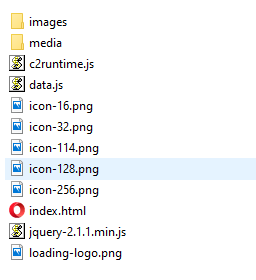

Alerta de segurança
Alerta de segurança

A cada nova geração do sistema operacional da Google, o Android, várias políticas são atualizadas, desta vez a Google começou a emitir um alerta sobre um arquivo js nos projetos Cordova, veja na imagem abaixo.

Mas o que é este arquivo?
jQuery é uma biblioteca de funções JavaScript que interage com o HTML, desenvolvida para simplificar os scripts interpretados no navegador do cliente.
Usada por cerca de 74.4% dos 10 mil sites mais visitados do mundo, jQuery é a mais popular das bibliotecas JavaScript.
Para entender com maiores detalhes sobre a biblioteca, saiba mais
sobre o jquey.
Como podem ver, essa é uma biblioteca que sempre é copiada para a pasta www do seu projeto quando exportado, porém a versão utilizada pelo
Construct 2, mesmo na estável mais atual é jquery-2.1.1.min.js, sendo que a biblioteca já se encontra na versão 3.4.1.
A solução neste caso é baixar a biblioteca mais atualizada e colocar dentro da pasta www do seu projeto.
Baixe a biblioteca mais recente no site oficial do projeto jquery.

Essa é uma estrutura básica da pasta www de um projeto cordova outras exportações também utilizam esta estrutura quando
exportado pelo Contruct 2.
Como podem ver, o arquivo jquery-2.1.1.min.js está presente.
Com o jquery mais recente baixado, copie o arquivo para a sua pasta www, pode deletar a versão mais antiga, sem problemas.

O próximo passo é alterar a linha index.html que está chamando a 2.1.1 e atualizar para a versão mais recente 3.4.1

Usando algum editor de código, aparece as linhas numeradas, neste caso o que precisamos alterar está na linha 61, recomendo muito usar editores de código, pois eles melhoram muito a produtividade.

Como podem ver, o processo é bem simples, pode buidar seu aplicativo e fazer um novo upload para a loja.
Se precisar de outros tutoriais, clique no voltar logo abaixo.
No momento em que este artigo estava sendo escrito, vi no forum oficial da engine que o criador Ashey vai corrigir essa pendência na versão 274 do Construct2 conforme comunicado no .